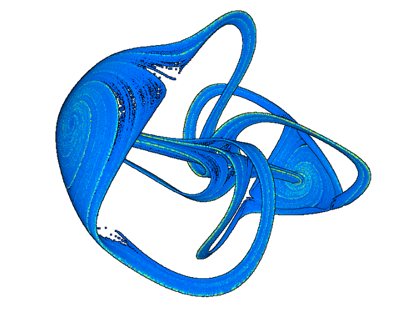
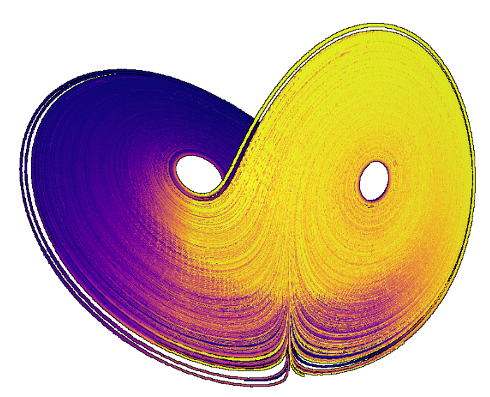

Visualisation de nuages de points d'attracteur étranges en utilisant Potree, un logiciel habituelement utilisé pour des données géographiques et stéréographiques.
Voir la version interactive ici

- Les trajectoires sont intégrées avec DifferentialEquations.jl, puis les points sont comptés par voxel afin d'obtenir une distribution de points régulière.
- Le nuage de point est alors transformées et intégrées dans Potree (a free open-source WebGL based point cloud renderer for large point clouds)
